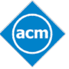

Medi-Caps ACM Student Chapter
One of the largest ACM Student Chapters

The Indian Space Research Organisation (ISRO, /ˈɪsroʊ/) (IAST: Bhāratīya Aṃtarikṣa Anusaṃdhāna Saṃgaṭhana) is the space agency of the Government of India headquartered in the city of Bangalore. Its vision is to "harness space technology for national development while pursuing space science research and planetary exploration." ACM provides a platform for the students to participate and work in the events organized in collaboration with organizations like Isro.
International Women's Day (IWD) has been observed since the early 1900's - a time of great expansion and turbulence in the industrialized world that saw booming population growth and the rise of radical ideologies. International Women's Day is a collective day of global celebration and a call for gender parity. No one government, NGO, charity, corporation, academic institution, women's network or media hub is solely responsible for International Women's Day. ACM always initiates such events.
Medi-Caps organizes a day or time of religious or other celebration, marked by feasting, ceremonies, or other observances just for the students.It is completely managed by students of the college with the guidance of the college faculty.
CDAN'16 will provide a platform for researchers to network and collaborations with industrialists. It will also provide an early career researchers with an inspiring event to connect them to relevant experts in the field. It will also bring the leading experts from all relevant scientific domain to advance the understanding of visual analytic of complexity and dynamic data.